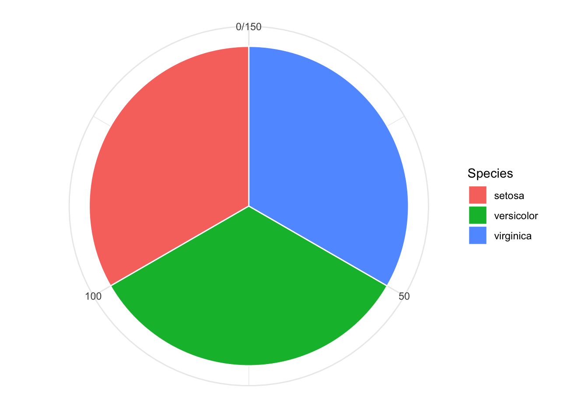
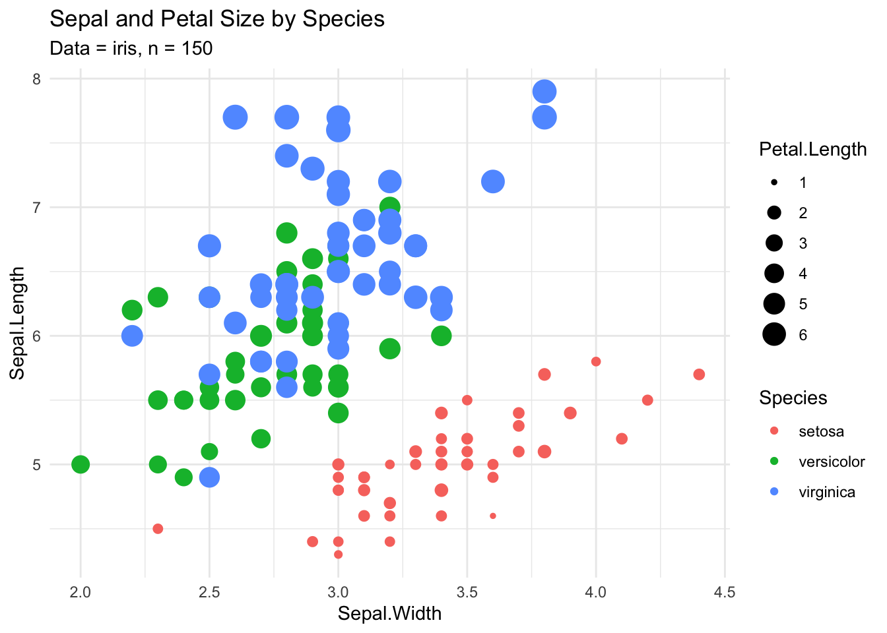
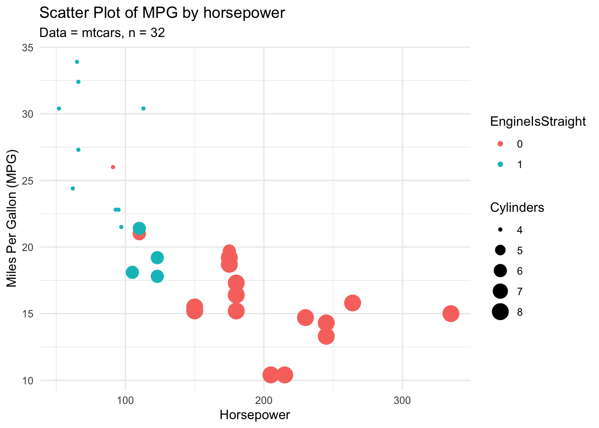
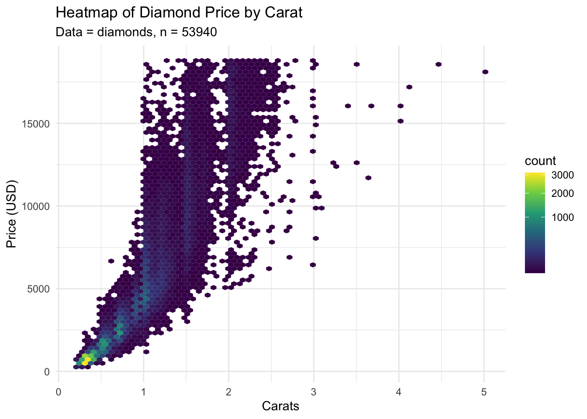
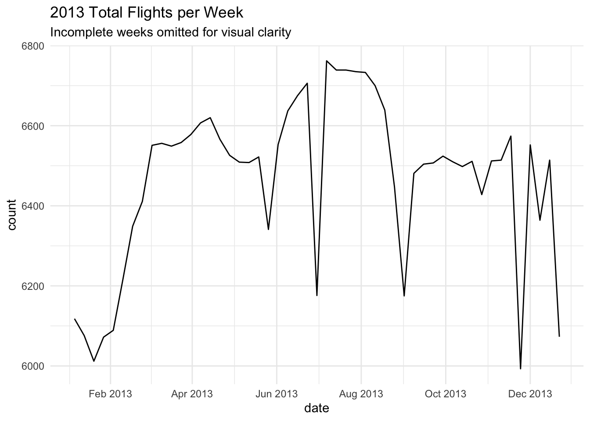

Once you have acquired a dataset to study, the first step in the analytical process is exploratory data analysis, or EDA. EDA is the process of observing and summarizing the key characteristics of a dataset to uncover basic underlying trends before diving deeper into advanced analysis. The exact steps of EDA that fit a project best will vary based on the dataset you’re studying, but this article will lay out some of the paths you can take during this step of your analytical process.
Descriptive Statistics
Descriptive statistics are basic measurements of dimension and spread that can give the user an understanding of the expected ranges and centers of a dataset’s variables. The psych package in R contains a function describe() which is quite effective for generating a litany of descriptive statistics, as shown in the example below:
It helps to have descriptive statistics of a dataset, but if you want to get a better look at a single variable you may want to perform univariate analysis and visualize it. Regardless of whether the variable in question is quantitative or categorical, multiple avenues of univariate analysis lay at your disposal.
Categorical Univariate Analysis
Frequency Tables (Absolute and Relative)
A simple method to display the number of appearances of each option within a chosen variable. Ex:
# Absolute Frequency Tabletable(iris$Species)
setosa versicolor virginica
50 50 50
# Relative Frequency tableprop.table(table(iris$Species))
Two simple plots to visually describe the characteristics of quantitative variables. Bar charts are more modular and easier to create in ggplot2 whereas pie charts are generally more visually appealing to general audiences. Ex:
# Pie Chartggplot(data = iris, aes(x ="", fill = Species)) +geom_bar(color ="white", width =1) +coord_polar(theta ="y", start =0) +theme_minimal() +labs(x =NULL, y =NULL)

Quantitative Univariate Analysis
Histograms
Charts that show the distribution of a variable in fine detail, consolidating points into small “bins” on the X axis and tallying the number of observations that fall into each bin on the Y axis. Ex:
All the following charts can be used in multivariate analysis as well through the addition of another variable as the fill factor (except the pie chart). Let’s use the histogram from earlier as example to highlight how this added layer of complexity can reveal more about a dataset’s underlying trends:
Tables that tally the number of entries in a dataset that have each possible value across two or more variables. For our example, we will use a contingency table on mtcars, another example dataset from R, to count the number of cars with x cylinders and y carburetors.
Note: although the variables cyl and carb are technically numerical, we can use as.factor() to cast them to a categorical form, which can be helpful for numerical variables that behave categorically (such as cylinders in a car engine)
We can add a third variable to this tabulation as well, which will create a table for each of its values. In this example, we use am, which denotes whether a car has automatic (0) or manual (1) transmission.
If it is more valuable to have these values as a representation of a percentage of a group, we can make these tables proportional using the prop.table() method. However, the group used as reference for determining each cell’s proportion depends on the value chosen for margin.
margin = 1: Proportional across rows (row sums = 100%)
margin = 2: Proportional across columns (column sums = 100%)
margin = NA: Proportional across all values (sum of all cells = 100%)
Let’s see this in action with mtcars one more time, making a table along each margin value.
#Proportional Across Rowsprop.table(table(as.factor(mtcars$cyl),as.factor(mtcars$carb),dnn=c("Cylinders", "Carburetors")),margin =1)
These proportional values make it very easy to begin to analyze the behavior of these categorical variables. For example, in mtcars:
All 4-cylinder cars have only 1 or 2 carburetors.
71% of cars with 1 carburetor only have 4 cylinders.
The two most common types of cars by cylinder and carburetor count are 4cyl-2carb and 8cyl-4carb, at 18.75% total proportion each.
Chi-Square Test of Independence
If you want to test the relationship between two categorical variables, you can perform a Chi-Square test to evaluate their independence. For example, let’s use the HairEyeColor dataset and test if hair and eye color are related.
library(tidyr)#Initial dataset contains tallies, revert to observations with uncount()data <-as.data.frame(HairEyeColor) |>uncount(Freq)#Data must be in table format for testhair_eye_table <-table(data$Hair, data$Eye)results <-chisq.test(hair_eye_table)print(results)
Each of the output values from the test have their own importance, but what we care about most is the p-value, which can be interpreted as such:
If there were no relationship between hair color and eye color in the overall population, the probability that their relationship would randomly appear as it does in this sample (p) is 2.2 * 10-16. Since p < 0.05, we can state that the result is statistically significant and reject the null hypothesis, H0, that there is no relationship between hair and eye color.
If you would like to learn more about performing chi-square tests in R, we recommend this article for further reading.
Multivariate Analysis - 2 or More Quantitative Variables
Scatter Plot
Scatter plots are the simplest form of quantitative multivariate analysis, and can be transformed to add detail in many ways. In ggplot, attributes such as size and color can be assigned to a dataset’s variables to express information in a digestible manner.
Below are two examples of themes within iris and mtcars visualized using scatter plots.
library(ggplot2)ggplot(data = iris, aes(x = Sepal.Width, y = Sepal.Length,size = Petal.Length, color = Species)) +geom_point() +labs(title ="Sepal and Petal Size by Species",subtitle ="Data = iris, n = 150") +theme_minimal()

library(ggplot2)ggplot(data = mtcars, aes(x = hp, y = mpg,size = cyl, color =as.factor(vs))) +geom_point() +labs(title ="Scatter Plot of MPG by horsepower",subtitle ="Data = mtcars, n = 32",color ="EngineIsStraight",size ="Cylinders",x ="Horsepower",y ="Miles Per Gallon (MPG)") +theme_minimal()

Density Plot
Density plots are the two-dimensional equivalent of histograms, with counts expressed on a color scale since the Y-axis is no longer available. If you make a scatter plot of your dataset, but there are too many points to discern any valuable information, there are two best options: Reduce the alpha value, which controls opacity, in the aes field, or replace the scatter plot with a density plot.
The following example shows the strength of making a density plot when analyzing a large dataset, such as diamonds.
library(ggplot2)data(diamonds)diamonds |>ggplot(aes(x = carat, y = price)) +geom_hex(bins =70) +# Uses transform = "sqrt" for a gentler compression curvescale_fill_viridis_c(transform ="sqrt") +labs(title ="Heatmap of Diamond Price by Carat",subtitle ="Data = diamonds, n = 53940",x ="Carats",y ="Price (USD)" ) +theme_minimal()

Line Plot
For ordinal data, especially time-based variables, line plots can visualize trends in a highly digestible manner.
The following example uses the nycflights13 package for acquisition and the lubridate package, an all-in-one tool for date and time manipulation, for transformation.
library(nycflights13)library(ggplot2)library(lubridate)library(dplyr)flights |># Floor the date to the beginning of the weekmutate(date =floor_date(time_hour, unit ="week")) |># Exclude partial weeksfilter(date >as_date("2012-12-30") & date <as_date("2013-12-29")) |>group_by(date) |>summarize(n_flights =n()) |>ggplot(aes(x = date, y = n_flights)) +geom_line() +# Reformat X-axis for readabilityscale_x_date(date_labels ="%b %Y", date_breaks ="2 months") +labs(title ="2013 Total Flights per Week",subtitle ="Incomplete weeks omitted for visual clarity",y ="count" ) +theme_minimal()

Correlograms
Correlograms are plots that show the correlation value between all quantitative variables in a dataset. They can easily present a variety of leads that you could investigate as you build your hypothesis. Ex:
This plot immediately presents a variety of leads, such as:
As cylinders, displacement, horsepower, and weight increase, MPG tends to decrease.
Manual cars have a strong positive correlation with gear count
Carburetor count has a strong positive correlation with horsepower
Conclusion
When performing EDA during project development, you likely won’t need to use all these methods. There is a skill to understanding which process best fits your dataset, and that will come with time. When preparing to perform EDA, ask yourself:
What variables appear most important? Are they categorical or quantitative?
What variable relationships will define my study? How can I frame them initially?
What findings from EDA would provide valuable context to my audience and are worth using in the final report?
If you can come up with well-thought-out answers to questions like these, EDA will become much easier.